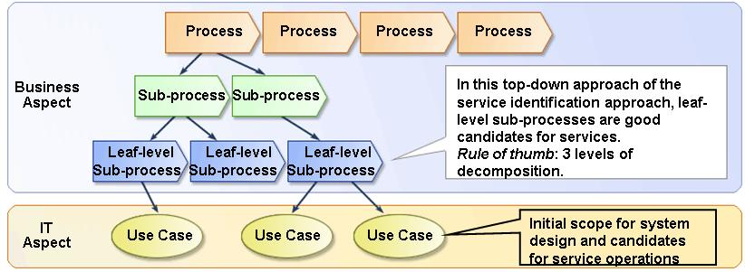

| Task: Decompose Processes into Sub-processes and Activities |
 |
|
| To decompose processes into lower level sub-processes and activities in order to arrive at candidate services. |
| Roles | Primary Performer: | Additional Performers: |
|---|---|---|
| Inputs | Mandatory: | Optional:
|
| Outputs |
|
|
SOMA Process Decomposition starts with Level 1 business process models provided by a business analyst. A Level 1 process model is a very high level view of a business process that has not yet been decomposed into sub-processes. A Level 1 model typically provides a structure and scope for process decomposition. Processes decompose into sub-processes or activities, eventually reaching a level where we find elementary processes that are the smallest activity that is meaningful to a user at a business level of significance instead of IT. Input to process modeling and decomposition can come from Level 1 business process models if present, and/or from information about interactions between a partitioning of the business such as business components in the CBM Component Model. Process Modeling and Decomposition results in a set of documented processes captured a list of candidate services that are added to the Service Portfolio and Service Hierarchy and a list of initial use cases.
A process is a group of logically related activities that use the resources of the organization to provide defined
results in support of the organization's objectives. One can think of a process as a specific defined response to a
business event that produces a product or delivers a service of interest to someone within or outside of the
enterprise. Process models describe the work that an organization is involved in and the behavior of systems the
organization uses. These models are especially useful in identifying inefficiencies in current processes, leading to
identification of opportunities for automation and business transformation.
Tip: Decomposition can continue to the point at which the processes being identified are the smallest
activities meaningful to a user and which when completed leave related information in a consistent state (either
updated, or returned to its original state). This may be more detailed than is needed for SOMA. As each level of
decomposition is completed, check to see if it is sufficiently detailed to identify elementary candidate services. If
so, decomposition has proceeded far enough for the time being.  Process decomposition Once we get to the point where we begin to look at user-system interactions, we should stop and label the sub-process a leaf-level sub-process or sometimes also called "Activity or Task". A leaf-level sub-process is a composite of system use cases, for example, a leaf-level sub-process of "Find Customer" in "Process Order" process would have use-cases of "Get Customer Name", "Get Customer Address" and "Get Order Items". |
| © Copyright IBM Corp. 1987, 2012 All Rights Reserved Property of IBM These materials are intended only for use as part of an IBM engagement |